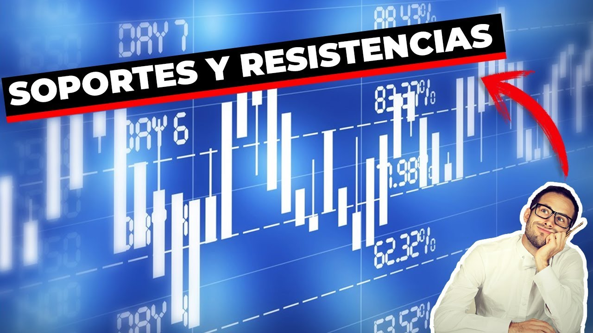
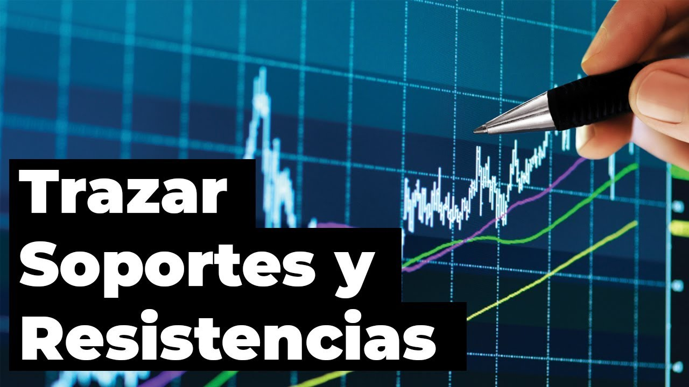
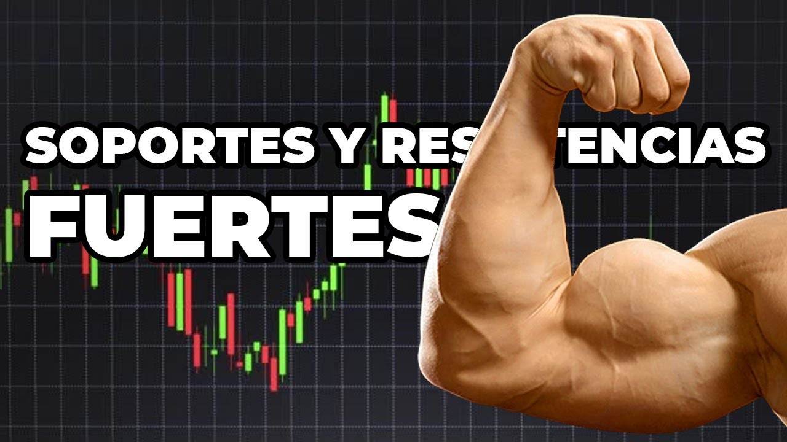
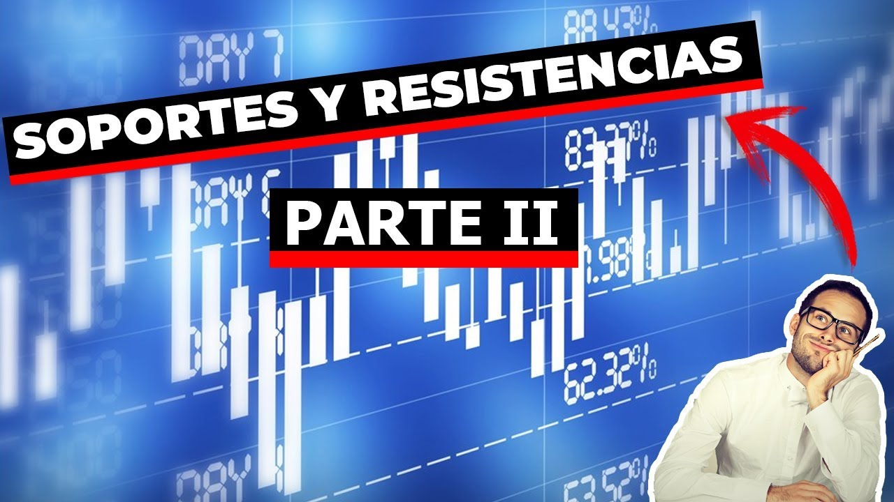

Soportes y Resistencias en el Trading
La mayoría de cursos de trading empiezan enseñando lo más básico, esto incluye por supuesto, los soportes y resistencias, o, los techos y suelos cómo también se le suele conocer.
Y tiene toda la razón, puesto que los soportes y resistencias son un tema bastante básico, y mucho ojo aquí de no confundir lo básico, con lo no necesario.
Este tema es sumamente importante y necesario para nosotros que somos traders que realizamos análisis técnico para operar.
Los soportes y resistencias no son tema solo para futuros o CFD’s, es un tema importante que tiene que saber manejar cualquier trader, independientemente del activo con el que trabaje, forex, criptos u Opciones Binarias como es nuestro caso.
Los soportes o techos y las resistencias o suelo, forman parte fundamental del análisis técnico y de la acción del precio. Podría decirse con exactitud que son un pilar fundamental en el trading. Nunca subestimes la importancia de un nivel de S/R mientras analizas el gráfico.
Una resistencia o techo es el punto más alto al cual el precio pudo llegar tras un movimiento alcista, la fuerza de venta en este punto supera a la de compra haciendo que el precio baje.

Un soporte o suelo es el punto más bajo al cual el precio pudo llegar tras un movimiento bajista, la fuerza de compra en este punto supera a la de venta haciendo que el precio suba.

He dedicado varios vídeos del curso a explicar a detalle lo que son estas zonas y cómo poder identificarlas en el gráfico, a continuación te dejo las clases respectivas para que puedas avanzar de una mejor manera en este aprendizaje.
En esta primer clase te explico qué son los soportes y resistencias:

En esta otra serie de clases explico cómo identificarlas en el mercado y cómo trazarlas correctamente:

Tenemos que saber identificar también entre las zonas de soporte y resistencia fuertes y las débiles.

Al final de estas clases a nuestros compañeros que nos siguen en el canal de YouTube de Binary Teach, les quedaron muchas dudas sobre este importante tema, por lo que a continuación te dejo un par de clases más donde cubro todas las dudas surgidas en esos momentos.

Para terminar, en muchas de las clases y vídeos de operativa, suelo mencionar los números redondos, o zonas institucionales, este es un tema también bastante importante el cual tenemos que tener conocimiento, el no identificar estas zonas pueden traernos resultados negativos en nuestras operativas. No hace falta que identifiques todos los números redondos, pero si tienes que tenerlos en consideración al momento de operar por que el precio podría reaccionar a ellos.
Ya para finalizar te recomiendo que te pases a ver este resumen, donde dejo algunas actividades que puedes realizar para compartir en el salón virtual: